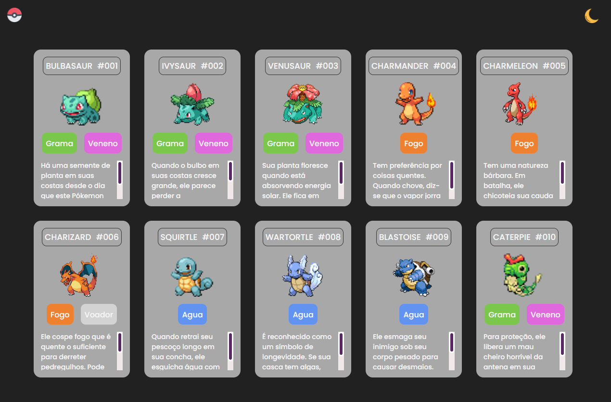

10 de Maio de 2023
Projeto Pokedex

Este é um projeto que simula uma pokedex do anime Pokémon, nesta
pokedex ficam os pokemons que são capturados durante as aventuras do
protagonista do anime, e com esses pokemons é possível treinar,
batalhar e se divertir.